Unicode
Definitions
- Glyphs
Resources
- Cold
Open - Historic
Charsets - Single
Byte - Multi
Byte - Variable
Byte - WP 4.2
utf8mb4
- Cold
Open - Historic
Charsets - Single
Byte - Multi
Byte - Variable
Byte - WP 4.2
utf8mb4
01001000 01101111 01110111 00100000 01100100 01101111 00100000 01111001 01101111 01110101 00100000 01101101 01100001 01101011 01100101 00100000 01100001 00100000 01110100 01101001 01110011 01110011 01110101 01100101 00100000 01100100 01100001 01101110 01100011 01100101 00111111
01011001 01101111 01110101 00100000 01110000 01110101 01110100 00100000 01100001 00100000 01101100 01101001 01110100 01110100 01101100 01100101 00100000 01100010 01101111 01101111 01100111 01101001 01100101 00100000 01101001 01101110 00100000 01101001 01110100 00101110
00101000 01110000 01101100 01100101 01100001 01110011 01100101 00100000 01100011 01101100 01100001 01110000 00101001
48 6f 77 20 64 6f 20 79 6f 75 20 6d 61 6b 65 20 61 20 74 69 73 73 75 65 20 64 61 6e 63 65 3f
59 6f 75 20 70 75 74 20 61 20 6c 69 74 74 6c 65 20 62 6f 6f 67 69 65 20 69 6e 20 69 74 2e
28 70 6c 65 61 73 65 20 63 6c 61 70 29
How do you make a tissue dance?
You put a little boogie in it.
(please clap)
Transfer
Ideas
Transfer
Language
Transfer
Information
Unicode
A way to transfer language with computers
Unicode
An agreed upon way to transfer written characters as computer characters
Unicode
A globally agreed upon standard format to transfer any and all written characters as encoded digital bytes
- Cold
Open - Historic
Charsets - Single
Byte - Multi
Byte - Variable
Byte - WP 4.2
utf8mb4
Glyphs
Simple Encoding
A B C D
a b c d
A = 1 B = 2 C = 3 D = 4
a = 27 b = 28 c = 29 d = 30
Simple Encoding
52 characters
Punctuation
Control Characters
Inclusive Encoding
Special characters
Additional Languages
Design Characters
- Cold
Open - Historic
Charsets - Single
Byte - Multi
Byte - Variable
Byte - WP 4.2
utf8mb4
- Cold
Open - Historic
Charsets - Single
Byte - Multi
Byte - Variable
Byte - WP 4.2
utf8mb4
- Cold
Open - Historic
Charsets - Single
Byte - Multi
Byte - Variable
Byte - WP 4.2
utf8mb4
- Cold
Open - Historic
Charsets - Single
Byte - Multi
Byte - Variable
Byte - WP 4.2
utf8mb4
Vertical Slides
Slides can be nested inside of each other.
Use the Space key to navigate through all slides.
Basement Level 1
Nested slides are useful for adding additional detail underneath a high level horizontal slide.
Basement Level 2
That's it, time to go back up.
Slides
Not a coder? Not a problem. There's a fully-featured visual editor for authoring these, try it out at http://slides.com.
Point of View
Press ESC to enter the slide overview.
Hold down alt and click on any element to zoom in on it using zoom.js. Alt + click anywhere to zoom back out.
Touch Optimized
Presentations look great on touch devices, like mobile phones and tablets. Simply swipe through your slides.
Fragments
Hit the next arrow...
... to step through ...
... a fragmented slide.
Fragment Styles
There's different types of fragments, like:
grow
shrink
fade-out
current-visible
highlight-red
highlight-blue
Transition Styles
You can select from different transitions, like:
None -
Fade -
Slide -
Convex -
Concave -
Zoom
Themes
reveal.js comes with a few themes built in:
Black (default) -
White -
League -
Sky -
Beige -
Simple
Serif -
Blood -
Night -
Moon -
Solarized
Slide Backgrounds
Set data-background="#dddddd" on a slide to change the background color. All CSS color formats are supported.
Image Backgrounds
<section data-background="image.png">Tiled Backgrounds
<section data-background="image.png" data-background-repeat="repeat" data-background-size="100px">Video Backgrounds
<section data-background-video="video.mp4,video.webm">... and GIFs!
Background Transitions
Different background transitions are available via the backgroundTransition option. This one's called "zoom".
Reveal.configure({ backgroundTransition: 'zoom' })Background Transitions
You can override background transitions per-slide.
<section data-background-transition="zoom">Pretty Code
function linkify( selector ) {
if( supports3DTransforms ) {
var nodes = document.querySelectorAll( selector );
for( var i = 0, len = nodes.length; i < len; i++ ) {
var node = nodes[i];
if( !node.className ) {
node.className += ' roll';
}
}
}
}
Code syntax highlighting courtesy of highlight.js.
Marvelous List
- No order here
- Or here
- Or here
- Or here
Fantastic Ordered List
- One is smaller than...
- Two is smaller than...
- Three!
Tabular Tables
| Item | Value | Quantity |
|---|---|---|
| Apples | $1 | 7 |
| Lemonade | $2 | 18 |
| Bread | $3 | 2 |
Clever Quotes
These guys come in two forms, inline:
“The nice thing about standards is that there are so many to choose from”
and block:
“For years there has been a theory that millions of monkeys typing at random on millions of typewriters would reproduce the entire works of Shakespeare. The Internet has proven this theory to be untrue.”
Intergalactic Interconnections
You can link between slides internally, like this.
Speaker View
There's a speaker view. It includes a timer, preview of the upcoming slide as well as your speaker notes.
Press the S key to try it out.
Export to PDF
Presentations can be exported to PDF, here's an example:
Global State
Set data-state="something" on a slide and "something"
will be added as a class to the document element when the slide is open. This lets you
apply broader style changes, like switching the page background.
State Events
Additionally custom events can be triggered on a per slide basis by binding to the data-state name.
Reveal.addEventListener( 'customevent', function() {
console.log( '"customevent" has fired' );
} );
Take a Moment
Press B or . on your keyboard to pause the presentation. This is helpful when you're on stage and want to take distracting slides off the screen.
Much more
- Right-to-left support
- Extensive JavaScript API
- Auto-progression
- Parallax backgrounds
- Custom keyboard bindings